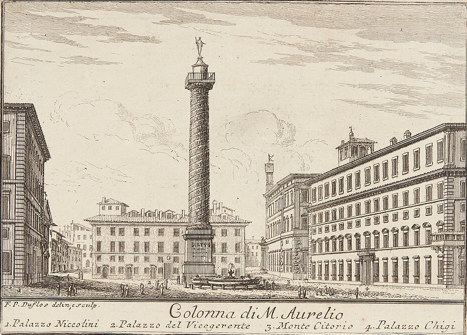

Governo Meloni
In carica dal 22 ottobre 2022
+454,1 mld €debito in più dall'inizio del mandato
146,1% 136,7%debito sul PIL, 2021 e 2025
Il debito di un periodo dipende anche da decisioni prese prima e da fatti che nessun governo controlla. Qui c'è solo cosa è successo durante il mandato.
Tutti i governiSopra: piazza Colonna verso il 1750, a destra Palazzo Chigi, oggi sede del governo. Statens Museum for Kunst, pubblico dominio.